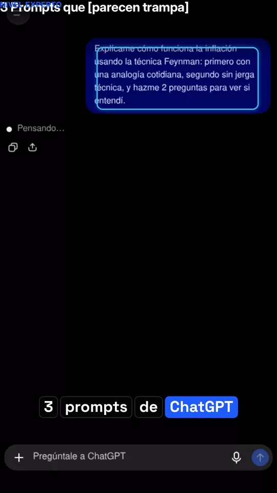

Los 24 prompts de nuestros vídeos, completos. Toca Copiar, pégalo en ChatGPT, Claude o Gemini y cambia lo que está en [amarillo] por lo tuyo.
Estás usando mal ChatGPT
3 formas de usarlo bien, en vez de como si fuera Google
Que te entreviste primeroDecidir mejor
Quiero organizar un viaje a Cusco de 4 días con 1500 soles. Antes de responder, hazme 3 preguntas para entender mi caso.
Cambia el viaje por lo que necesites. Con sus preguntas, la respuesta es para ti y no para cualquiera.
Que te lo explique como a un niñoTrámites
Explícame este texto como si tuviera 12 años y dime qué tengo que hacer: [pega aquí el contrato, la carta del banco…]
Que te lleve la contrariaDecidir mejor
Voy a [tu plan]. Hazme de abogado del diablo: dime los 3 riesgos que no estoy viendo.
Ejemplo del vídeo: «Voy a renunciar a mi trabajo para abrir una cafetería».

Prompts que parecen trampa
Respuestas de otro nivel con técnicas de verdad
Técnica Feynman: aprende cualquier temaAprender
Explícame cómo funciona [tema] usando la técnica Feynman: primero con una analogía cotidiana, segundo sin jerga técnica, y hazme 2 preguntas para ver si entendí.
En el vídeo lo probamos con la inflación.
Negociador del FBI: que te bajen el precioDinero
Un proveedor me quiere cobrar [cuánto más] por el mismo servicio. Actúa como negociador del FBI: dame 2 respuestas con preguntas calibradas para que baje el precio sin pelear.
Las «preguntas calibradas» son de Chris Voss: obligan al otro a pensar en tu problema.
Detector de falaciasDecidir mejor
Analiza este argumento: «[pega aquí el argumento]». Encuentra la falacia lógica y explícamela en 2 líneas.
Pruébalo con el del vídeo: «Todos los millonarios se levantan a las 5 am, si quieres ser rico tienes que madrugar».
Modo lectura de mente
Usa lo que ChatGPT ya sabe de ti. Si te atreves
Dibújame con mi contextoPara reírte
Dibújame en una imagen con todo el contexto que tienes de mí.
Funciona mejor si tienes activada la memoria de ChatGPT.
Mi yo de dentro de 5 años si no cambio nadaPara reírte
Según mis hábitos y dudas que ya conoces, descríbeme con frialdad cómo será un martes mío dentro de 5 años si sigo exactamente igual que hoy, en 4 líneas.
Rostéame sin piedadPara reírte
Usa las cosas que te he preguntado para burlarte de mí en 4 líneas sin tenerme compasión.
✦
Prompts que te ahorran horas
Probados con la API de OpenAI, con respuestas reales
Resume cualquier texto largoAprender
Te voy a pegar un texto largo. Devuélveme:
1) Un resumen en 5 líneas.
2) Las fechas, cifras y decisiones importantes.
3) Qué tengo que hacer yo, en una lista.
Si algo no está claro, dímelo en vez de inventarlo.
Texto: [pega aquí]
Lo probamos con el acta de una junta de propietarios: sacó la subida de cuota y avisó de que el acta no decía el año.
Contesta un correo sin perder la calmaTrabajo
Escribe una respuesta a este correo.
Tono: amable pero firme.
Lo que quiero conseguir: [tu objetivo].
Máximo 100 palabras.
Dame 2 versiones: una formal y una más cercana.
Correo: [pega aquí]
Aprende lo que quieras con un planAprender
Quiero aprender [tema] en [n] semanas, con [minutos] al día.
Hazme un plan día por día con recursos gratis.
Al final de cada semana, ponme un mini examen de 3 preguntas.
Empieza por lo que más se usa en la vida real.
Que un reclutador destroce tu CVTrabajo
Actúa como un reclutador exigente de [sector].
Lee mi CV y dime:
- 3 cosas por las que me descartarías.
- 3 cosas que te gustan.
Después reescribe mi resumen profesional en 3 líneas.
CV: [pega aquí]
Antes de una decisión grandeDecidir mejor
Voy a tomar esta decisión: [tu decisión].
Antes de opinar, hazme las 5 preguntas más incómodas que debería responderme.
Después dame los riesgos que no estoy viendo y qué haría una persona prudente.
✦
Para cosas que sí te pasan
Contratos, reclamos, el súper y entrevistas
¿Tu contrato tiene trampas?Trámites
Actúa como un abogado que protege a la persona que va a firmar.
Lee este contrato y dime:
1) Las 3 cláusulas que más me perjudican, con la frase exacta.
2) Qué cambio debería pedir en cada una.
3) Lo que falta o no queda claro.
No inventes leyes: si depende del país, avísame.
Contrato: [pega aquí]
No sustituye a un abogado: confírmalo con uno de tu país antes de firmar.
Reclama y que te hagan casoTrámites
Escribe un reclamo a [empresa].
Hechos: [pega aquí].
Lo que exijo: [tu objetivo].
Incluye los datos clave, un plazo de 5 días y qué haré si no responden.
Sin insultos y menos de 120 palabras.
Dame 2 versiones: una formal y una más directa.
El súper de la semana, resueltoDinero
Hazme un menú de 7 días para [n] personas con [presupuesto] a la semana, sin [excluir].
Después dame la lista de la compra agrupada por secciones, con el precio aproximado de cada cosa y el total.
Reutiliza ingredientes para que no sobre nada.
Ensaya la entrevista de trabajoTrabajo
Hazme una entrevista de trabajo para [puesto].
Una pregunta cada vez y espera mi respuesta.
Después de cada respuesta ponme una nota del 1 al 10, dime qué falló y dame una versión mejorada.
Una carta que no entiendesTrámites
Te voy a pegar una carta que no entiendo.
Dime:
1) Qué dice, en una frase.
2) Cada palabra difícil, explicada como a un niño de 12 años.
3) Qué me piden hacer y para cuándo.
Si hay una cifra o un plazo que me puede costar dinero, márcalo.
Carta: [pega aquí]
✦
Prompts que cuidan tu bolsillo
Estafas, aumentos, gastos y saber decir que no
¿Es una estafa?Trámites
Me llegó este mensaje. Analízalo y dime:
1) Las señales de estafa, citando las frases exactas.
2) Qué quieren que haga.
3) Qué haría una persona prudente.
No me digas que es seguro si no puedes comprobarlo.
Mensaje: [pega aquí]
Ante la duda, entra siempre por la app oficial de tu banco, nunca por el enlace del mensaje.
Pide el aumentoDinero
Quiero pedir un aumento de [tu objetivo].
Escríbeme:
1) Un correo corto para pedir la reunión.
2) Lo que diría en persona, en 30 segundos y con 3 argumentos.
3) Qué responder si me dicen «ahora no se puede».
Usa solo estos datos, no inventes ninguno: [pega aquí]
¿Dónde se va tu plata?Dinero
Estos son mis gastos del mes: [pega aquí].
Ordénalos por categoría, dime las 3 fugas que más me cuestan y hazme un plan para ahorrar [tu objetivo] al mes sin dejar de vivir.
Aprende a decirle que no a tu jefeTrabajo
Haz de mi jefe, que me pide [tu situación].
Yo voy a practicar decir que no sin quedar mal.
Habla tú primero, con una sola frase.
Después de cada respuesta mía, ponme nota del 1 al 10 y dame una versión mejor.
Haz que tu anuncio vendaDinero
Actúa como un comprador desconfiado de [plataforma].
Lee mi anuncio y dime:
- 3 cosas que me harían no comprar.
- 3 que sí me convencen.
Después reescríbelo para que venda.
Anuncio: [pega aquí]
Antes de pegar nada: no metas contraseñas, números de tarjeta ni tu DNI en un chat de IA. Para contratos y cartas, tapa los datos personales; la IA no los necesita para ayudarte.